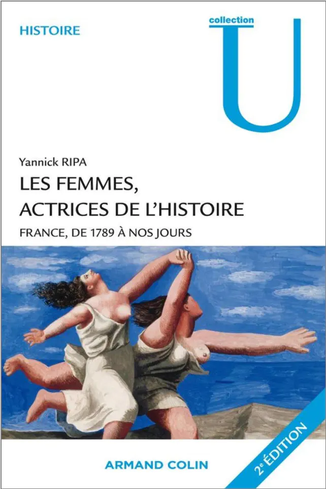

L’histoire du féminisme
De la révolution française au mouvement #MeToo en passant par Simone Veil, Les femmes, actrices de l’histoire France, de 1789 à nos jours expose une vision globale du féminisme à travers les âges.
Première de couverture du livre Les femmes, actrices de l’histoire France, de 1789 à nos jours. Disponible ici.
Les femmes, actrices de l’histoire
Yannick RIPA publie en 2010 son ouvrage Les femmes, actrices de l’histoire France, de 1789 à nos jours. A travers ce livre, l’auteure et historienne retrace l’histoire de la condition des femmes en particulier en France mais avec une ouverture sur le monde. On y découvre la position des femmes dans la société et leur quotidien durant différentes époques, de la révolution française jusqu’au début du XXIe siècle.
Le livre est très complet et donne de nombreux renseignements sur le sujet. Il permet de mieux comprendre les origines du féminisme. Le livre retrace les nombreux combats qu’ont mené les femmes pour obtenir des droits longtemps interdits.
Les précurseurs du féminisme
Au XVIIIe siècle, les femmes, comme la société sont divisées selon les ordres. Cependant, que ce soit dans la noblesse, le clergé, ou le tiers état. Les différences entre les hommes et les femmes sont très marquées. Le cruel manque d'instruction des femmes est en grande partie responsable de cet écart.
La révolution française apparaît pour les femmes comme un espoir pour leur condition. Malheureusement, les cahiers de doléances féminins sont trop peu nombreux et les hommes écartent rapidement les femmes de la politique. Les premières personnalités "féministes" apparaissent tout de même tel que Condorcet. Il est considéré comme le premier théoricien du féminisme et défenseur de leurs droits politiques. A la même époque, Olympe de Gouges, première féministe radicale rédige de la déclaration des droits de la femme et de la citoyenne. Les femmes restent toutefois les grandes perdantes de la révolution, contexte qui fera naître le féminisme plus tard.
Un siècle difficile pour le féminisme
La révolution française laisse ensuite place au XIXe siècle, période difficile pour la condition féminine. En effet, la science à ses débuts "prouve" très maladroitement l'infériorité des femmes, les considérant faibles et atteintes d'hystérie. La création du code civil empire encore la situation. Les femmes sont destituées de leur liberté en étant placées sous la domination du mari qui peut à l'époque faire usage de la force sur son épouse.
La condition des femmes s'améliore vers la fin du XIXe siècle, considérée comme la belle époque pour les femmes. Elles commencent à avoir accès à plus de métiers, notamment ceux de l'art. En France, Hubertine Auclert (lien) devient la première femme à se déclarer ouvertement féministe, terme qui s'impose à cette époque. Les femmes sont alors présentes dans la presse et plusieurs groupes féministes voient le jour. A la fin du siècle, les lycées ouvrent leurs portes aux filles et les femmes représentent 38% de la population active.
Les femmes pendant la guerre
Avec l'arrivée de la première guerre mondiale, les femmes sont contraintes de remplacer les hommes au travail. En premier lieu dans l’agriculture puis dans l'industrie. Elles gagnent une certaine autonomie et en 1918 les ouvrières représentent 60% du personnel chez Citroën par exemple. Cependant la situation revient à la normale à la fin de la guerre pour les femmes. La France connaît quant à elle une crise démographique. Le gouvernement adopte alors la tristement célèbre loi du 31 juillet 1920 interdisant l'avortement et toute propagande anticonceptionnelle.
Lors de la Deuxième Guerre mondiale, la condition féminine connaît un certain retour en arrière à cause de la vision du régime de Vichy. En effet, il tient en partie responsable de la défaite, la féminisation de la société et les libertés accordées aux femmes. Le régime de Vichy revient alors à une vision passée de la femme en la considérent uniquement comme mère.
“La femme doit faire des enfants, car il n’existe pas de mauvaises mères, uniquement des femmes mauvaises par leur refus de la maternité.”
De plus, l'arrivée de la résistance divise à nouveau les femmes. En effet, certaines en font partie tandis que d’autres collaborent avec l’ennemi. Cette période est tout de même marquée par l’aboutissement des idées de Hubertine Auclert. En effet, le gouvernement accorde le droit de vote aux femmes le 21 avril 1944, plus de 25 ans après le Royaume-Uni.
Lire aussi : Les Suffragettes, prêtes à tout pour voter
Un enchaînement de vagues
La Deuxième Guerre mondiale laisse place au baby boom, résultat de la politique nataliste. Petit à petit à la deuxième vague féministe apparaît également. Le livre “Le deuxième sexe” de Simone de Beauvoir, paraît et on le considère rapidement comme le fondement du féminisme moderne. Pendant cette période, fortement inspirée du women’s lib américain, les combats principaux des femmes sont le libre accès à la contraception et à l’avortement. Le féminisme connaît de 1965 à 1985, “les vingt glorieuses”. La condition féminine connaît de nombreuses innovations grâce à des figures du féminisme telles que Simone Veil ou Gisèle Halimi. Ainsi, le 19 décembre 1967, la France légalise la contraception. Puis le 30 novembre 1975, le gouvernement adopte la loi Veil sur l’IVG.
Lire aussi : Gisèle Halimi, une féministe née
A partir des années 1980, la troisième vague féministe voit le jour. Le mouvement est plus mondial mais aussi plus dispersé. En effet, les femmes défendent des multitudes de causes et la notion de féministe intersectionnel apparaît. Enfin, depuis les années 2010, avec la démocratisation des réseaux sociaux et en particulier Twitter, une quatrième vague du féminisme s’esquisse. Le féminisme est toujours intersectionnel et met l’accent sur les agressions sexuelles avec notamment les mouvements #MeToo ou #Balancetonporc en France. Les féministes dénoncent alors la culture du viol et les inégalités salariales encore très présentes alors que la part de femme dans la population active est de 48,3% en 2020.
Les femmes, actrices de l’histoire France, de 1789 à nos jours est donc un ouvrage très intéressant permettant de retracer et d’avoir une vision plus claire de l’histoire du féminisme et des femmes en général.
Et aujourd'hui ?
Micro-trottoire : ce que pensent les gens du féminisme aujourd’hui